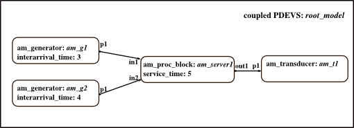

Initialization Script: Single Server
Initializes a model of a single server. Model consists of two generators for raw workpieces and a server (processing block), which assembles a product from those pieces. Finally, a transducer to collect and count assembled parts is added to the model.
Contents
Basic models are take from the "Assembly Line" example, folder DEVSPATH/01-modelbase/assembly_line.
Call: init_singleserver
File: DEVSPATH/02-examples/discrete/single_server/init_singleserver.m

Model Structure
Preparation
close all; clear all; clear classes;
%clc; global SIMUSTOP % to stop simulation by condition SIMUSTOP = 0; global HYBRID HYBRID = 0; % it's a pure discrete, not a hybrid model elapsed = 0;
Create the Model
Atomic models' classes: am_proc_block, am_generator, am_transducer.
% Instantiate two atomic DEVS of type am_generator % am_g1 and am_g21 with different generation times interarrival_time1 = 3; interarrival_time2 = 4; inistates1 = struct('counter',0); inistates2 = struct('counter',0); am_g1 = am_generator('am_g1',inistates1,elapsed,interarrival_time1); am_g2 = am_generator('am_g2',inistates2,elapsed,interarrival_time2); % Instantiate an atomic devs of type am_proc_block % with parameter service_time inistates = struct('phase','passive','sigma',inf,'q1',0,'q2',0); service_time = 5; am_server1 = am_proc_block('am_server1',inistates,elapsed,service_time); % Instantiate an atomic devs of type am_transducer. % Minimum of parameters, nothing additional; inistates = struct('q',0); % the counter for incoming jobs am_t1 = am_transducer('am_t1',inistates,elapsed); % Create pattern for root model root_model = coupled('root_model');% in and output ports, always none for root model addcomponents(root_model,{am_g1, am_g2,am_server1,am_t1}); Zid_model = {'am_g1','p1','am_server1','in1';... 'am_g2','p1','am_server1','in2';... 'am_server1','out1','am_t1','p1'}; set_Zid(root_model, Zid_model);
Take a look at the model
showall(root_model);
Check(root_model);
set_observe(root_model, 1);% track all state variables in s of atomics
Finally
Done! Now the root_coordinator can be called to simulate the model:
root_model = r_c_discrete(root_model,tstart,tend)
After simulation you can take a look at states all atomic models by executing the script analyse_singleserver.
Commands to initialize, simulate, analyse the example:
>> init_singleserver;
>> root_model = r_c_discrete(root_model,0,24);
>> analyse_singleserver;
DEVS Tbx Home Examples Modelbase << Back